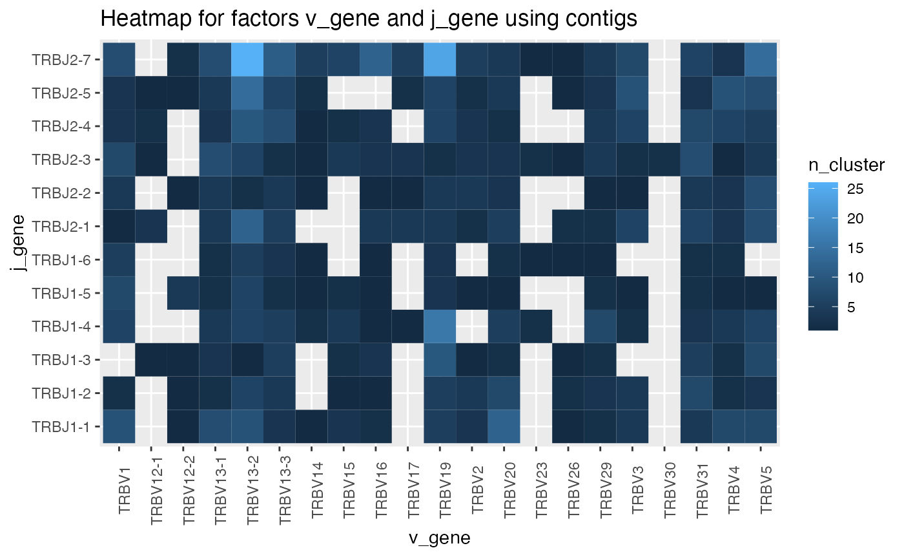
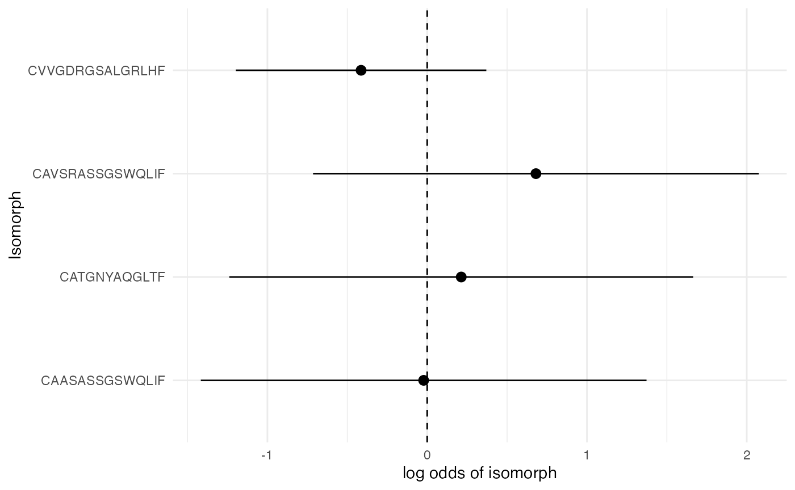

Clustering and differential usage of repertoire CDR3 sequences
Andrew McDavid
University of Rochester, Department of Biostatistics and Computational BiologyAndrew_McDavid@urmc.rochester.edu Source:
vignettes/cdr3_clustering.Rmd
cdr3_clustering.RmdIn this vignette we demonstrate clustering of 3rd complementary determining region sequence (CDR3) and V-J gene identity of mouse T cells, ways to visualize and explore clusters that are expanded, pairing of alpha-beta clusters, tests of differential CDR3 usage, and permutation tests for overall clonal properties.
library(CellaRepertorium)
library(dplyr)
#>
#> Attaching package: 'dplyr'
#> The following objects are masked from 'package:stats':
#>
#> filter, lag
#> The following objects are masked from 'package:base':
#>
#> intersect, setdiff, setequal, union
library(ggplot2)
library(readr)
library(tidyr)
library(stringr)
library(purrr)Load filtered contig files
We begin with a data.frame of concatenated contig files
(‘all_contig_annotations.csv’), output from the Cellranger VDJ
pipeline.
data(contigs_qc)
MIN_CDR3_AA = 6
cdb = ContigCellDB_10XVDJ(contigs_qc, contig_pk = c('barcode', 'pop', 'sample', 'contig_id'), cell_pk = c('barcode', 'pop', 'sample'))
cdb
#> ContigCellDB of 1508 contigs; 832 cells; and 0 clusters.
#> Contigs keyed by barcode, pop, sample, contig_id; cells keyed by barcode, pop, sample.Initially we start with 832 cells and 1508 contigs. We keep contigs that are
- full - length
- productive
- high-confidence
- only from T cells
- and with CDR3 sufficiently long.
Then we add a descriptive readable name for each contig.
cdb$contig_tbl = dplyr::filter(cdb$contig_tbl, full_length, productive == 'True', high_confidence, chain != 'Multi', str_length(cdr3) > MIN_CDR3_AA) %>% mutate( fancy_name = fancy_name_contigs(., str_c(pop, '_', sample)))After filtering, there are 832 cells and 1496 contigs.
Clustering contigs by sequence characteristics
As a first step to define clonotypes, we will first find equivalence
classes of CDR3 sequences with the program CD-HIT.
In this case, we use the translated amino acid residues, but often one
might prefer to use the DNA sequences, by setting the
sequence_key accordingly and type = 'DNA'.
Additionally, a higher identity threshold might be appropriate (see
below).
aa80 = cdhit_ccdb(cdb, sequence_key = 'cdr3', type = 'AA', cluster_pk = 'aa80',
identity = .8, min_length = 5, G = 1)
aa80 = fine_clustering(aa80, sequence_key = 'cdr3', type = 'AA', keep_clustering_details = TRUE)
#> Calculating intradistances on 988 clusters.
#> SummarizingThis partitions sequences into sets with >80% mutual similarity in
the amino acid sequence, adds some additional information about the
clustering, and returns it as a ContigCellDB object named
aa80. The primary key for the clusters is aa80. The
min_length can be set somewhat smaller, but there is a
lower limit for the cdhit algorithm. G=1, the default,
specifies a global alignment. This is almost always what is desired, but
local alignment is available if G=0.
head(aa80$cluster_tbl)
#> # A tibble: 6 × 4
#> aa80 avg_distance fc n_cluster
#> <dbl> <dbl> <list> <int>
#> 1 1 0 <named list [5]> 1
#> 2 2 0 <named list [5]> 1
#> 3 3 0 <named list [5]> 2
#> 4 4 0 <named list [5]> 1
#> 5 5 0 <named list [5]> 1
#> 6 6 0 <named list [5]> 1
head(aa80$contig_tbl) %>% select(contig_id, aa80, is_medoid, `d(medoid)`)
#> # A tibble: 6 × 4
#> contig_id aa80 is_medoid `d(medoid)`
#> <chr> <dbl> <lgl> <dbl>
#> 1 ATCTACTCAGTATGCT-1_contig_3 1 TRUE 0
#> 2 ACTGTCCTCAATCACG-1_contig_3 2 TRUE 0
#> 3 CACCTTGTCCAATGGT-1_contig_2 3 TRUE 0
#> 4 CACCTTGTCCAATGGT-1_contig_2 3 FALSE 0
#> 5 CGGACGTGTTCATGGT-1_contig_1 4 TRUE 0
#> 6 CTGCTGTTCCCTAATT-1_contig_4 5 TRUE 0The cluster_tbl lists the 988 80% identity groups found,
including the number of contigs in the cluster, and the average distance
between elements in the group. In the contig_tbl, there are
two columns specifying if the contig is_medoid, that is, is
the most representative element of the set and the distance to the
medoid element d(medoid).
cluster_plot(aa80)
#> Loading required namespace: cowplot
#> `stat_bin()` using `bins = 30`. Pick better value with `binwidth`.
#> `stat_bin()` using `bins = 30`. Pick better value with `binwidth`.Cluster CDR3 DNA sequences
cdb = cdhit_ccdb(cdb, 'cdr3_nt', type = 'DNA', cluster_pk = 'DNA97', identity = .965, min_length = MIN_CDR3_AA*3-1, G = 1)
cdb = fine_clustering(cdb, sequence_key = 'cdr3_nt', type = 'DNA')
#> Calculating intradistances on 1342 clusters.
#> Summarizing
cluster_plot(cdb)
#> `stat_bin()` using `bins = 30`. Pick better value with `binwidth`.
#> `stat_bin()` using `bins = 30`. Pick better value with `binwidth`.
We can also cluster by DNA identity.
Cluster by V-J identity
germline_cluster = cluster_germline(cdb, segment_keys = c('v_gene', 'j_gene', 'chain'), cluster_pk = 'segment_idx')
#> Warning in replace_cluster_tbl(ccdb, cluster_tbl, cl_con_tbl, cluster_pk =
#> cluster_pk): Replacing `cluster_tbl` with DNA97.We can cluster by any other feature of the contigs. Here we cluster each contig based on the chain and V-J genes. This gives us the set of observed V-J pairings:
germline_cluster = fine_clustering(germline_cluster, sequence_key = 'cdr3_nt', type = 'DNA')
#> Calculating intradistances on 700 clusters.
#> Summarizing
#> Warning in left_join_warn(d_medoid, contig_tbl, by = ccdb$contig_pk, overwrite =
#> TRUE): Overwriting fields d(medoid), is_medoid in table contig_tbl
filter_cdb(germline_cluster, chain == 'TRB') %>% plot_cluster_factors(factors = c('v_gene','j_gene'), statistic = 'contigs', type = 'heatmap')
Number of pairs. The pearson residual (showing the difference from
expected counts given marginals) is probably more informative, set
statistic = 'residual' for this.
ggplot(germline_cluster$cluster_tbl %>% filter(chain == 'TRB'), aes(x = v_gene, y = j_gene, fill = avg_distance)) + geom_tile() + theme(axis.text.x = element_text(angle = 90))Average Levenshtein distance of CDR3 within each pair. This might be turned into a z-score by fitting a weighted linear model with sum-to-zero contrasts and returning the studentized residuals. This could determine if a pairing has an unexpected small, or large, within cluster distance.
Expanded clusters
Next, we will examine the clusters that are found in many contigs. First we will get a canonical contig to represent each cluster. This will be the medoid contig, by default.
aa80 = canonicalize_cluster(aa80, representative = 'cdr3', contig_fields = c('cdr3', 'cdr3_nt', 'chain', 'v_gene', 'd_gene', 'j_gene'))
#> Filtering `contig_tbl` by `is_medoid`, override by setting `contig_filter_args == TRUE`aa80 now includes the fields listed in
contig_fields in the cluster_tbl, using the
values found in the medoid contig.
MIN_OLIGO = 7
oligo_clusters = filter(aa80$cluster_tbl, n_cluster >= MIN_OLIGO)
oligo_contigs = aa80
oligo_contigs$contig_tbl = semi_join(oligo_contigs$contig_tbl, oligo_clusters, by = 'aa80')
oligo_contigs
#> ContigCellDB of 54 contigs; 832 cells; and 4 clusters.
#> Contigs keyed by barcode, pop, sample, contig_id; cells keyed by barcode, pop, sample.Get contigs/cells/clusters found at least 7 times (across contigs).
Note that replacing contig_tbl with the subset selected
with the semi_join also automatically subsetted the
cell_tbl and cluster_tbl.
oligo_clusters = oligo_contigs$contig_tbl %>% group_by(aa80) %>% summarize(`n subjects observed` = length(unique(sample))) %>% left_join(oligo_clusters)
#> Joining, by = "aa80"
knitr::kable(oligo_clusters %>% select(aa80:cdr3, chain:j_gene, avg_distance, n_cluster))| aa80 | n subjects observed | cdr3 | chain | v_gene | d_gene | j_gene | avg_distance | n_cluster |
|---|---|---|---|---|---|---|---|---|
| 111 | 6 | CVVGDRGSALGRLHF | TRA | TRAV11 | None | TRAJ18 | 0.6071429 | 28 |
| 172 | 5 | CAVSRASSGSWQLIF | TRA | TRAV9N-3 | None | TRAJ22 | 2.1111111 | 9 |
| 296 | 6 | CAASASSGSWQLIF | TRA | TRAV14D-2 | None | TRAJ22 | 1.5000000 | 8 |
| 808 | 4 | CATGNYAQGLTF | TRA | TRAV8D-2 | None | TRAJ26 | 1.3333333 | 9 |
Report some statistics about these expanded clusters, such as how often they are found, how many subjects, etc.
oligo_plot = ggplot(oligo_contigs$contig_tbl, aes(x = representative, fill = chain)) + geom_bar() + coord_flip() + scale_fill_brewer(type = 'qual') + theme_minimal()
oligo_plot
These always come from a single chain.
oligo_plot + aes(fill = sample) + facet_wrap(~pop)But come from multiple populations and samples.
Some simple phylogenetic relationships
By using the within-cluster distances, some rudamentory plots attempting to show phylogenetic associations are possible. (These are most biologically appropriate for B cells that undergo somatic hypermutation.)
library(ggdendro)
dendro_plot = function(ccdb, idx, method = 'complete'){
h = filter(ccdb$cluster_tbl, !!sym(ccdb$cluster_pk) == idx) %>% pull(fc) %>% .[[1]]
quer = filter(ccdb$contig_tbl, !!sym(ccdb$cluster_pk) == idx)
hc = hclust(as.dist(h$distance_mat), method = method) %>% dendro_data(type = "rectangle")
hc$labels = cbind(hc$labels, quer)
ggplot(hc$segments, aes(x=x, y=y)) + geom_segment(aes(xend=xend, yend=yend)) +
theme_classic() + geom_text(data = hc$labels, aes(color = sample, label = fancy_name), size = 3, angle = 60, hjust =0, vjust = 0) + scale_x_continuous(breaks = NULL) + ylab('AA Distance') + xlab('')
}
to_plot = aa80$cluster_tbl %>% filter(min_rank(-n_cluster) == 1)
map(to_plot$aa80, ~ dendro_plot(aa80, .))
#> [[1]]A full-blown generative model of clonal generation and selection would be recommended for any actual analysis, but these plots may suffice to get a quick idea of the phylogenetic structure.
Formal testing for frequency differences
We can test for differential usage of a clone, or cluster with
cluster_logistic_test and cluster_test_by. The
latter splits the cluster_tbl by
field = 'chain', thereby adjusting the number of cell
trials included in the “denominator” of the logistic regression. The
formula tests for differences between populations, including the sample
as a random effect, and only tests clusters that are included in the
oligo_clusters set.
mm_out = cluster_test_by(aa80, fields = 'chain', tbl = 'cluster_tbl', formula = ~ pop + (1|sample), filterset = cluster_filterset(white_list = oligo_clusters)) %>%
left_join(oligo_clusters)
#> Fitting mixed logistic models to 4 clusters.
#> Loading required namespace: broom
#> Loading required namespace: lme4
#> Loading required namespace: broom.mixed
#> boundary (singular) fit: see help('isSingular')
#> boundary (singular) fit: see help('isSingular')
#> boundary (singular) fit: see help('isSingular')
#> Fitting mixed logistic models to 0 clusters.
#> Joining, by = c("chain", "aa80")
mm_out = mutate(mm_out, conf.low = estimate-1.96*std.error,
conf.high = estimate + 1.96*std.error)
mm_outj = filter(ungroup(mm_out), term == 'popbalbc') %>% arrange(desc(representative))
ggplot(mm_outj, aes(x = representative, ymin = conf.low, ymax = conf.high, y = estimate)) + geom_pointrange() + coord_flip() + theme_minimal() + geom_hline(yintercept = 0, lty = 2) + xlab("Isomorph") + ylab("log odds of isomorph")
We test if the binomial rate of clone expression differs between balbc and b6, for the selected clones. None appear to be different.
Length of CDR3
aa80$contig_tbl = aa80$contig_tbl %>% mutate(cdr3_length = str_length(cdr3_nt))
ggplot(aa80$contig_tbl, aes(fill = pop, x= cdr3_length)) +
geom_histogram(binwidth = 1, mapping = aes(y = ..density..)) +
theme_minimal() + scale_fill_brewer(type = 'qual') +
facet_grid(sample ~chain) + theme(strip.text.y = element_text(angle = 0)) + coord_cartesian(xlim = c(25, 55))
Some authors have noted that the length of the CDR3 region can be
predictive of T cell differentiation. In our study, there doesn’t appear
to be a noticeable difference between BALB/c and C57BL/6J (b6) mice, but
if we needed to make sure, an appropriate procedure would be to run a
mixed model with a random sample effect (assumed to
represent a biological replicate).
cdr_len = aa80$contig_tbl %>% group_by(chain) %>% do(broom::tidy(lme4::lmer(cdr3_length ~ pop + (1|sample), data = .), conf.int = TRUE))
#> boundary (singular) fit: see help('isSingular')
#> boundary (singular) fit: see help('isSingular')
ggplot(cdr_len %>% filter(term == 'popbalbc'), aes(x = interaction(chain, term), y = estimate, ymin = conf.low, ymax = conf.high)) +
geom_pointrange() + theme_minimal() + coord_flip() +
ylab('Length(CDR3 Nt)') + xlab('Term/Chain') + geom_hline(yintercept = 0, lty = 2)We end up with a (harmless) convergence warning about a singular fit.
This is expected, because the samples aren’t actually
replicates – they are just subsamples drawn for illustrative purposes.
The Balbc mice have .5 fewer nucleotides per contig, on average, and
this is not significant.
Clonal pairs
Next, we can examine the pairing between \(\alpha-\beta\) chains and see if any pairs are found more than once.
aa80$cluster_pk = 'representative'
aa80 = rank_prevalence_ccdb(aa80)
pairing_list = pairing_tables(aa80, table_order = 2, orphan_level = 1, min_expansion = 3, cluster_keys = c('cdr3', 'representative', 'chain', 'v_gene', 'j_gene', 'avg_distance'))pairing_tables finds all contig combinations of order
table_order across cells. Among those combinations that
occur at least min_expansion times, the expanded
combinations and and any other combinations that shared an expanded
combo.
pairs_plt = ggplot(pairing_list$cell_tbl, aes(x = cluster_idx.1_fct, y = cluster_idx.2_fct)) + geom_jitter(aes(color = sample, shape = pop), width = .2, height = .2) + theme_minimal() + xlab('TRB') + ylab('TRA') + theme(axis.text.x = element_text(angle = 45))
pairs_plt = map_axis_labels(pairs_plt, pairing_list$idx1_tbl, pairing_list$idx2_tbl, aes_label = 'chain')
pairs_plt
Expanded clones
whitelist = oligo_clusters %>% dplyr::select(cluster_idx.1 = representative) %>% unique()
pairing_list = pairing_tables(aa80, table_order = 2, orphan_level = 1, min_expansion = Inf, cluster_whitelist = whitelist, cluster_keys = c('cdr3', 'representative', 'chain', 'v_gene', 'j_gene', 'avg_distance'))
pairs_plt = ggplot(pairing_list$cell_tbl, aes(x = cluster_idx.1_fct, y = cluster_idx.2_fct)) + geom_jitter(aes(color = sample, shape = pop), width = .2, height = .2) + theme_minimal() + xlab('TRB') + ylab('TRA') + theme(axis.text.x = element_text(angle = 45))
pairs_plt = map_axis_labels(pairs_plt, pairing_list$idx1_tbl, pairing_list$idx2_tbl, aes_label = 'chain')
pairs_plt
By setting
min_expansion = Inf, cluster_whitelist = whitelist we can
examine any pairings for a set of cluster_idx, in this case the ones
that were seen multiple times. Interestingly (and unlike some human
samples) the expanded clusters are \(\beta\)-chain, and their \(\alpha\) chains are sprinkled quite evenly
across clusters.
Permutation tests
Permutation tests allow tests of independence between cluster assignments and other cell-level covariates (such as the sample from which the cell was derived). The cluster label is permuted to break the link between cell and cluster, and an arbitrary statistic of both cluster label, and cell covariate is evaluated.
aa80_chain = split_cdb(aa80, 'chain') %>% lapply(canonicalize_cell, contig_fields = 'aa80')
compare_expanded = function(cluster_idx, grp){
# cluster_idx contains the permuted cluster assignments
# grp the cell_covariate_keys.
# NB: this is always a data.frame even if it is just a single column
# cross tab by pop
tab = table(cluster_idx, grp[[1]])
# count number of times an aa80 class was expanded
expanded = colSums(tab>=2)
# compare difference
expanded['b6'] - expanded['balbc']
}The signature of the statistic should be of a vector
cluster_idx and data.frame.
set.seed(1234)
perm1 = cluster_permute_test(aa80_chain$TRB, cell_covariate_keys = 'pop', cell_label_key = 'aa80', n_perm = 100, statistic = compare_expanded)
perm1
#> A single PermuteTest:
#> contrast identity. observed = 5, expected = 4.92, p.value = 0.86.Although b6 mice had 5 more clones observed to be expanded (occuring >=2 times) than balbc, this is not signficant under a null model where cells were permuted between mouse types (populations), where b6 are expected to have about 5 more expanded clones, just due to the additional number of cells sampled in b6 and the particular spectrum of clonal frequencies in this experiment:
| pop | Freq |
|---|---|
| b6 | 398 |
| balbc | 377 |
Indeed if we resample in a way that fixes each group to have the same number of cells:
rarify = aa80_chain$TRB$cell_tbl %>% group_by(pop) %>% do(slice_sample(., n = 377))
aa80_chain$TRB$cell_tbl = semi_join(aa80_chain$TRB$cell_tbl, rarify)
#> Joining, by = c("aa80", "barcode", "pop", "sample")
cluster_permute_test(aa80_chain$TRB, cell_covariate_keys = 'pop', cell_label_key = 'aa80', n_perm = 500, statistic = compare_expanded)
#> A single PermuteTest:
#> contrast identity. observed = -1, expected = 0.726, p.value = 0.74.We see that this discrepacy between the number of expanded clones between subpopulations is mostly explained by a greater number of cells sampled in b6, but also random variability plays a role.
We can also test for oligoclonality, eg, how often is a beta chain expanded in a sample:
count_expanded = function(cluster_idx, grp){
# clusters x sample contigency table
tab = table(cluster_idx, grp[[1]])
# number of cluster x samples that occured more than once
expanded = sum(tab>1)
expanded
}
perm3 = cluster_permute_test(aa80_chain$TRB, cell_covariate_keys = 'sample', cell_label_key = 'aa80', n_perm = 500, statistic = count_expanded)
perm3
#> A single PermuteTest:
#> contrast identity. observed = 27, expected = 37, p.value = 0.032.27 expanded clones were observed in each of the two populations vs 37 expected, and this discrepancy would be significant at \(p<\) 0.04. This is indicating that there is underdispersion – fewer clusters are expanded than expected, given the spectrum of clonal frequencies and the number of cells per sample.
To further elucidate this, we can restrict the permutations to
maintain certain margins of the table by specifying
cell_stratify_keys. This doesn’t effect the observed values
of the statistics, but will change the expected values (since these are
now conditional expectations.) Here we restrict the permutations within
levels of pop (eg, only permuting within balbc, and within
b6).
cluster_permute_test(aa80_chain$TRB, cell_covariate_keys = 'sample', cell_stratify_keys = 'pop', cell_label_key = 'aa80', n_perm = 500, statistic = count_expanded)
#> A single PermuteTest:
#> contrast identity. observed = 27, expected = 44.7, p.value = 0.002.In the restricted permutations, the expected number of expanded
clusters is even greater. Both of these effects are due to the fact that
the “sample” replicates, within each population actually are not
biological replicates, which inflates the cluster_idx
margin of the table.
Sequences of permutation tests across cell subpopulations
In many cases, we want test a sequence of contrasts of
cell_covariate_keys variables vs the
cell_label_key. For instance,
cell_covariate_keys might include the cell subpopulation
derived from gene expression taken from a cell, and we want to compare
the levels of clonal expansion between subpopulations. Suppose we have
four such subpopulation idents:
ident = gl(length = length(aa80_chain$TRB$cell_tbl$pop), n = 4, k = 1)
head(ident)
#> [1] 1 2 3 4 1 2
#> Levels: 1 2 3 4
aa80_chain$TRB$cell_tbl$ident = identWe can compare all pairs: 2 vs 1, 3 vs 1, 4 vs 1, 3 vs 2, 4 vs 2, 4
vs 3, and in fact this is the default action. If contrasts
(a matrix or list of vectors) is specified, we can perform other sets of
comparisons, like 1 vs the average in all other ident:
contrast_vec = c(1, -1/3, -1/3, -1/3)The key is that the statistic should return a vector, as
this now does:
compare_expanded_vec = function(cluster_idx, grp){
tab = table(cluster_idx, grp[[1]])
# count number of times an aa80 class was expanded
expanded = colSums(tab>=2)
expanded
}
perm4 = cluster_permute_test(aa80_chain$TRB, cell_covariate_keys = 'ident', cell_stratify_keys = 'sample',
cell_label_key = 'aa80', n_perm = 100, statistic = compare_expanded_vec)
plot_permute_test(perm4)
#> `stat_bin()` using `bins = 30`. Pick better value with `binwidth`.The default of all pairwise comparisons.
perm5 = cluster_permute_test(aa80_chain$TRB, cell_covariate_keys = 'ident', cell_stratify_keys = 'sample',
cell_label_key = 'aa80', n_perm = 100, statistic = compare_expanded_vec, contrasts = contrast_vec)
plot_permute_test(perm5)
#> `stat_bin()` using `bins = 30`. Pick better value with `binwidth`.
tidy.PermuteTestList(perm5)
#> # A tibble: 100 × 7
#> statistics observed expected p.value mc.se contrast_name contrast
#> <dbl> <dbl> <dbl> <dbl> <dbl> <chr> <chr>
#> 1 -2.00e+ 0 -4.67 0.677 0.12 0.346 1 1, -0.3333333333333…
#> 2 -3 e+ 0 -4.67 0.677 0.12 0.346 1 1, -0.3333333333333…
#> 3 -2.00e+ 0 -4.67 0.677 0.12 0.346 1 1, -0.3333333333333…
#> 4 1.67e+ 0 -4.67 0.677 0.12 0.346 1 1, -0.3333333333333…
#> 5 1.67e+ 0 -4.67 0.677 0.12 0.346 1 1, -0.3333333333333…
#> 6 -8.33e+ 0 -4.67 0.677 0.12 0.346 1 1, -0.3333333333333…
#> 7 -7 e+ 0 -4.67 0.677 0.12 0.346 1 1, -0.3333333333333…
#> 8 -3.33e- 1 -4.67 0.677 0.12 0.346 1 1, -0.3333333333333…
#> 9 -2.67e+ 0 -4.67 0.677 0.12 0.346 1 1, -0.3333333333333…
#> 10 2.78e-16 -4.67 0.677 0.12 0.346 1 1, -0.3333333333333…
#> # … with 90 more rowsThere is also a tidy method.
Colophone
sessionInfo()
#> R version 4.1.2 (2021-11-01)
#> Platform: aarch64-apple-darwin20 (64-bit)
#> Running under: macOS Monterey 12.3.1
#>
#> Matrix products: default
#> BLAS: /Library/Frameworks/R.framework/Versions/4.1-arm64/Resources/lib/libRblas.0.dylib
#> LAPACK: /Library/Frameworks/R.framework/Versions/4.1-arm64/Resources/lib/libRlapack.dylib
#>
#> locale:
#> [1] en_US.UTF-8/en_US.UTF-8/en_US.UTF-8/C/en_US.UTF-8/en_US.UTF-8
#>
#> attached base packages:
#> [1] stats graphics grDevices utils datasets methods base
#>
#> other attached packages:
#> [1] ggdendro_0.1.23 purrr_0.3.4 stringr_1.4.0
#> [4] tidyr_1.2.0 readr_2.1.2 ggplot2_3.3.5
#> [7] dplyr_1.0.8 CellaRepertorium_1.7.1 BiocStyle_2.22.0
#>
#> loaded via a namespace (and not attached):
#> [1] nlme_3.1-153 bitops_1.0-7 fs_1.5.2
#> [4] RColorBrewer_1.1-2 progress_1.2.2 rprojroot_2.0.2
#> [7] GenomeInfoDb_1.30.1 tools_4.1.2 backports_1.4.1
#> [10] bslib_0.3.1 utf8_1.2.2 R6_2.5.1
#> [13] DBI_1.1.2 BiocGenerics_0.40.0 colorspace_2.0-3
#> [16] withr_2.5.0 prettyunits_1.1.1 tidyselect_1.1.2
#> [19] compiler_4.1.2 textshaping_0.3.6 cli_3.2.0
#> [22] desc_1.4.1 labeling_0.4.2 bookdown_0.25
#> [25] sass_0.4.1 scales_1.1.1 pkgdown_2.0.2
#> [28] systemfonts_1.0.4 digest_0.6.29 minqa_1.2.4
#> [31] rmarkdown_2.13 XVector_0.34.0 pkgconfig_2.0.3
#> [34] htmltools_0.5.2 lme4_1.1-28 fastmap_1.1.0
#> [37] highr_0.9 rlang_1.0.2 rstudioapi_0.13
#> [40] jquerylib_0.1.4 farver_2.1.0 generics_0.1.2
#> [43] jsonlite_1.8.0 broom.mixed_0.2.7 RCurl_1.98-1.6
#> [46] magrittr_2.0.2 GenomeInfoDbData_1.2.7 Matrix_1.3-4
#> [49] Rcpp_1.0.8 munsell_0.5.0 S4Vectors_0.32.3
#> [52] fansi_1.0.2 lifecycle_1.0.1 stringi_1.7.6
#> [55] yaml_2.3.5 MASS_7.3-54 zlibbioc_1.40.0
#> [58] plyr_1.8.6 grid_4.1.2 forcats_0.5.1
#> [61] crayon_1.5.0 lattice_0.20-45 Biostrings_2.62.0
#> [64] cowplot_1.1.1 splines_4.1.2 hms_1.1.1
#> [67] knitr_1.37 pillar_1.7.0 boot_1.3-28
#> [70] reshape2_1.4.4 stats4_4.1.2 glue_1.6.2
#> [73] evaluate_0.15 BiocManager_1.30.16 vctrs_0.3.8
#> [76] nloptr_2.0.0 tzdb_0.2.0 gtable_0.3.0
#> [79] assertthat_0.2.1 cachem_1.0.6 xfun_0.30
#> [82] broom_0.7.12 ragg_1.2.2 tibble_3.1.6
#> [85] memoise_2.0.1 IRanges_2.28.0 ellipsis_0.3.2